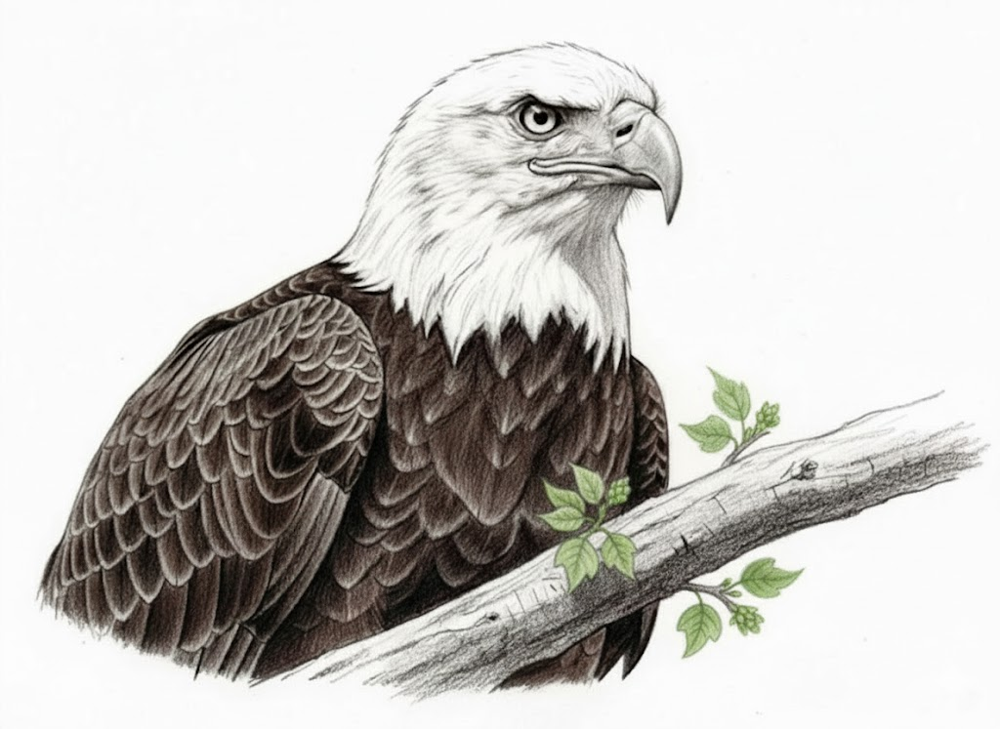

The Bitter Taste
A personal essay written as a warning and reminder to my future self, and to anyone walking a similar path.
My current learning and research interests focus on efficient visual attention mechanisms in computer vision, extreme quantization of vision models, inference runtime acceleration, sparse computation, and efficient model distillation.
I am also interested in autonomous exploration and target tracking for high-speed UAVs, involving reinforcement learning, path planning, multi-sensor fusion, perception, and control.
Recently, I have been actively studying Neural Field Theory and exploring how attention mechanisms can be re-understood and redesigned from a more effective biological perspective, with the goal of investigating their potential value for visual representation learning and efficient perception models.
If you have any interesting ideas related to these directions, please feel free to reach out.

A personal essay written as a warning and reminder to my future self, and to anyone walking a similar path.

A high-performance TensorRT inference engine, supporting FP16 & INT8 deployment, CUDA-native preprocessing and post-processing, and a unified C++ runtime API.

A modular real-time vision and gimbal-control prototype for counter-UAV laser tracking.

A RoboMaster radar-station system for LiDAR-assisted robot localization, multi-target tracking, map projection, and referee-system communication.

A Fast Visual Validation Tool for LiDAR-Camera Extrinsic Calibration Results.